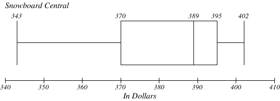

Statistics Unit
2.9 Interpreting Box and Whisker Plots
- Below are the prices of snowboards at two competing snowboard stores:
Middletown Snowboards Snowboard Central 345, 350, 356, 360, 375, 405 343, 370, 386, 392, 392, 395, 402 - Identify the 5 main statistics of each set of data.
- Draw a double box-and-whisker plot of the above data on the scale below:
- What is the median price for a snowboard at Middletown Snowboards?
- What is the lowest price you could pay for a snowboard at Snowboard Central?
- What is the most expensive board at Middletown Snowboards?
- What is the range of prices for snowboards at Snowboard Central?
- Which price represents the 75th percentile for Middletown Snowboards?
- Which store would you rather buy a snowboard from? Why?
Middletown Snowboards Snowboard Central Low = 345
Lower Quartile = 350
Median = 358
Upper Quartile = 375
High = 405Low = 343
Lower Quartile = 370
Median = 389
Upper Quartile = 395
High = 402


$358
$343
$405
$59
$375
Middletown Snowboards, because the majority of the prices are below the majority of the prices at Snowboard Central.
- The accompanying box-and-whisker plot represents the cost, in dollars, of twelve CD’s.

- Which cost is the upper quartile?
- What is the range of the costs of the CD’s? $22
- What is the median?
- Which cost represents the 100th percentile?
- How many CD’s cost between $14.50 and $26.00?
- How many CD’s cost less than $14.50?
$26
$20.50
$29
6
3
- The accompanying box-and-whisker plot represents the scores earned on a math test.

- What is the median score?
- 75
- 70
- 85
- 77
i. 75
- What score represents the first quartile?
- 55
- 70
- 100
- 75
ii. 70
- What statement is not true about the box and whisker plot shown?
- 75 represents the mean score
- 100 represents the maximum score
- 85 represents the 3rd quartile
- 55 represents the minimum score
i. 75 represents the mean score
- A score of an 85 on the box-and-whisker plot shown refers to:
- the third quartile
- the median
- the maximum score
- the mean
i. the third quartile
- What is the median score?
- What is the median price for a snowboard at Middletown Snowboards?

- 70
- 75
- 77
- 85
b. 75
- What is the value of the third quartile shown on the box-and-whisker plot below?

- 6
- 8.5
- 10
- 12
c. 10
-
A movie theater recorded the number of tickets sold daily for a popular movie during the month of June. The box-and-whisker plot shown below represents the data for the number of tickets sold, in
hundreds.

Which conclusion can be made using this plot?
- The second quartile is 600.
- The mean of the attendance is 400.
- The range of the attendance is 300 to 600.
- d) Twenty-five percent of the attendance is between 300 and 400.
d. Twenty-five percent of the attendance is between 300 and 400.
- The accompanying box-and-whisker plots can be used to compare the annual incomes of three professions.
![The scale on the Box and Whisker plot is from 0 to 140 counting by 10. Each number represents the annual income in thousands of dollars. There are three plots. The first one is for the income for Nuclear Engineers. The low number is 50, the quartile 1 number is 60, the median is 70, the quartile 3 number is 100 and the high number is 120. The second plot is for the income for Police Officers. The low number is 12, the quartile 1 number is 22, the median is 30, the quartile 3 number is 43 and the high number is 60. The third plot is for the income for Musicians. The low number is 8, the quartile 1 number is 20, the median is 30, the quartile 3 number is 80 and the high number is 122.](images/u2s9p7.png)
Based on the box-and-whisker plots, which statement is true?
- The median income for nuclear engineers is greater than the income of all musicians.
- The median income for police officers and musicians is the same.
- All nuclear engineers earn more than all police officers.
- A musician will eventually earn more than a police officer.
b. The median income for police officers and musicians is the same.
- The data set 5, 6, 7, 8, 9, 9, 9, 10, 12, 14, 17, 17, 18, 19, 19 represents the number of hours spent on the Internet in a week by students in a mathematics class. Which box-and-whisker plot represents the data?
b.